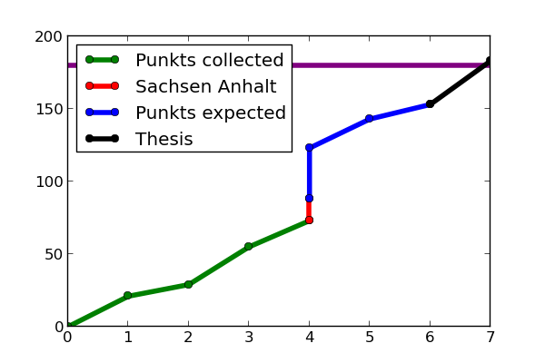
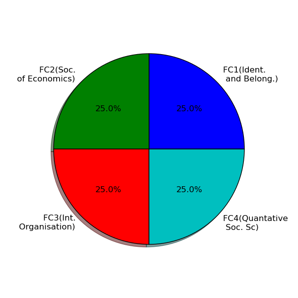
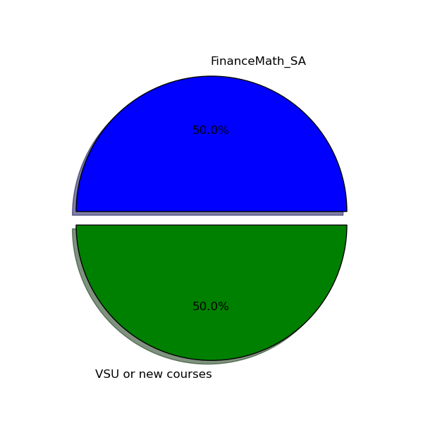
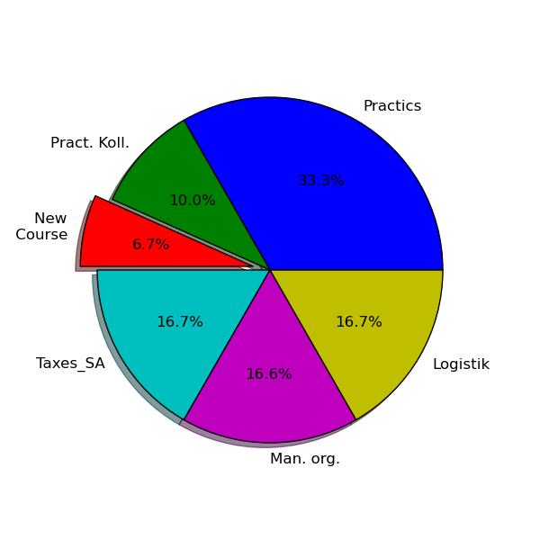

Anna Bachelor Studies
Table of Contents
1 Anna makrs
1.1 Table of courses
| Courses taken | |||||
|---|---|---|---|---|---|
| Graded | |||||
| Name of Course | Punkts | Grade | PxG | Semester | Expectation |
| Sociological Theory | 8.0 | 4.0 | 32. | 1 | |
| Compar. Polit. Science | 8.0 | 3.7 | 29.6 | 1 | |
| Social Structures | 8.0 | 3.7 | 29.6 | 2 | |
| Microsociology | 8.0 | 2.3 | 18.4 | 3 | |
| Empirical Sociology | 12.0 | 1.7 | 20.4 | 3 | |
| Statistics | 5.0 | 3.3 | 16.5 | 1 | |
| Statistics | 5.0 | 2.7 | 13.5 | 4 | |
| Semester thesis Stat. | 0 | 5 | 5.0 | ||
| Semester thesis Stat. | 0 | 4 | 5.0 | ||
| FRG Politics | 0 | 5 | 8.0 | ||
| Pol. T. and Idea Hist. | 0 | 4 | 8.0 | ||
| Vertifung-I | 0 | 4 | 7.0 | ||
| Vertifung-II | 0 | 5 | 7.0 | ||
| Bachelor Thesis | 0 | 7 | 30.0 | ||
| Summary | 54. | 2.9629630 | |||
| Not Graded | |||||
| FC1(Ident. and Belong.) | 5.0 | 0. | 4 | ||
| FC2(Soc. of Economics) | 5.0 | 0. | 4 | ||
| FC3(Int. Organisation) | 5.0 | 0. | 5 | ||
| FC4(Quantative Soc. Sc) | 5.0 | 0. | 5 | ||
| Proseminar-I | 3.0 | 0. | 3 | ||
| Proseminar-II | 3.0 | 0. | 4 | ||
| SG(FinanceMathSA) | 0 | 0. | 5.0 | ||
| BZQ(LogisticsSA) | 0 | 0. | 5.0 | ||
| BZQ(TaxesSA) | 0 | 0. | 5.0 | ||
| BZQ-Practics | 0 | 6 | 10.0 | ||
| BZQ(Praktikums Kolloquium) | 3.0 | 0. | 3 | ||
| BZQ(Management Organization) | 5.0 | 0. | 5 | ||
| Summary | 34. | ||||
| Total | Punkts | Avg Grade | |||
| 88. | 2.962963 |
SG:studien generale 10.0 FC:Free choice 20.0 BZQ:Bezugen Qualification+practics 30.0
1.2 Punkts Progress per semesters

1.3 Free Courses

1.4 Studien Generale

1.5 BZQ
